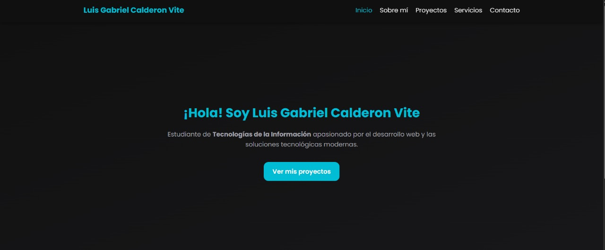
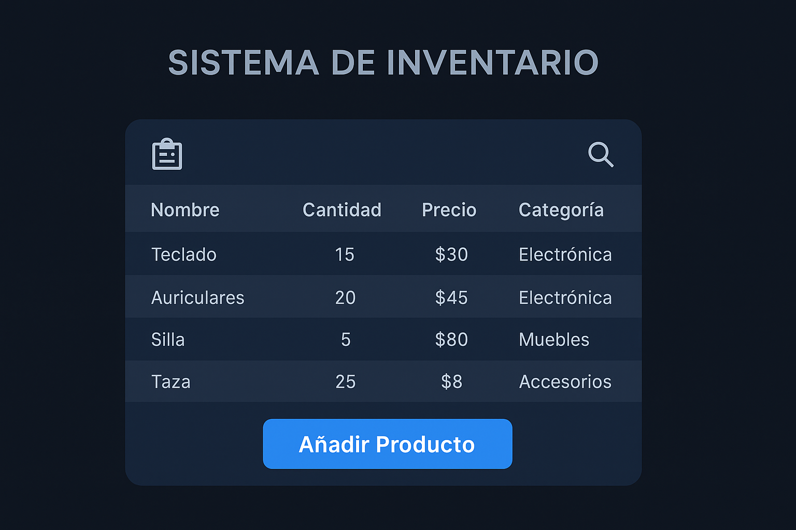

Mis Proyectos
Algunos de los trabajos que he realizado durante mi formación en Tecnologías de la Información, enfocados en desarrollo web y soluciones digitales.

Gestor de Tareas
Aplicación web para gestionar tareas pendientes con interfaz simple y responsive.
Ver más

Portafolio Web
Diseño y desarrollo de un portafolio personal con HTML, CSS y JavaScript moderno.
Ver más

Sistema de Inventario
Proyecto académico que permite administrar productos, existencias y ventas.
Ver más